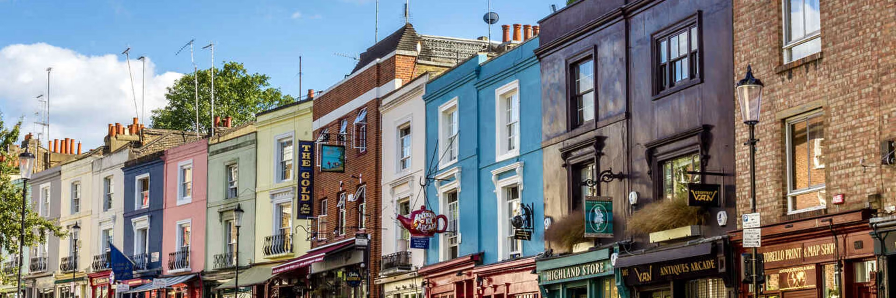

抵達希斯路機場 (LHR)
乘 Elizabeth Line 直達 Paddington 站 (£13.30)。
3月20日 - 4月6日 (18天)
Portobello Road Market
諾丁山波多貝羅市集，古董與美食。(週六是主市集日，古董、美食、街頭表演最熱鬧。這是電影《摘星奇緣》(Notting Hill) 的場景。)
 市集導航

Buckingham Palace (白金漢宮)
11:00 衛兵交接儀式（需提早）。(觀看衛兵交接儀式 (Changing of the Guard) 需視乎當日是否舉行，建議提早佔位。)
皇宮導航起飛 (AY1338)
4月6日 05:35 抵達香港
旅程圓滿結束！